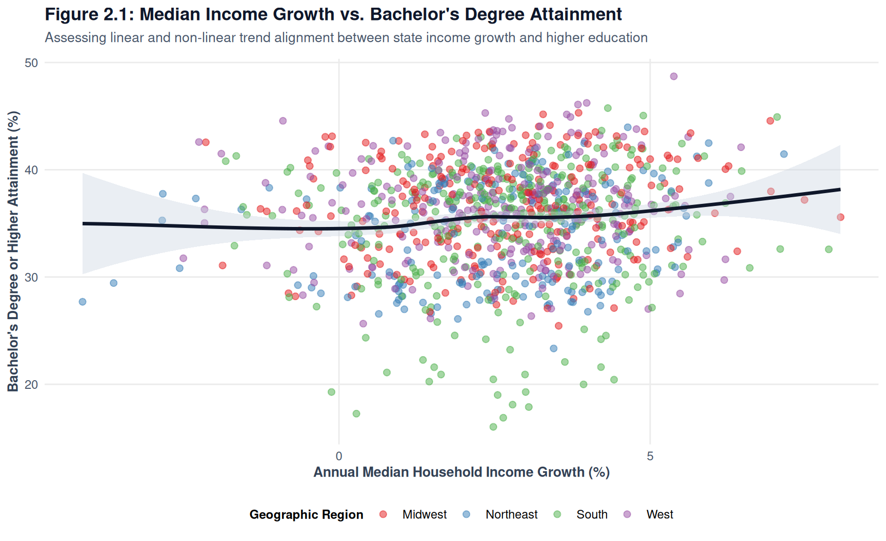
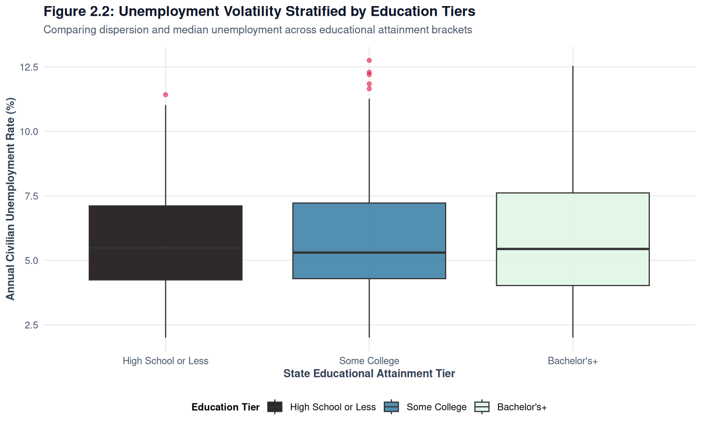
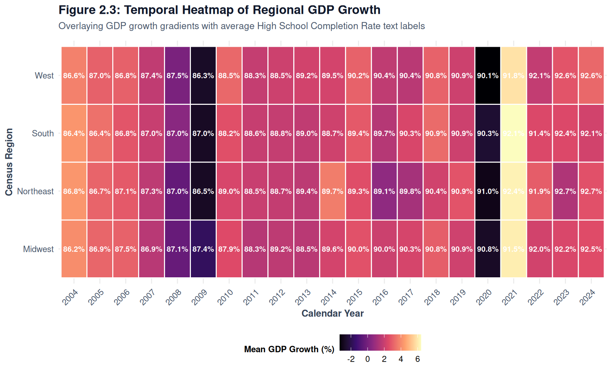
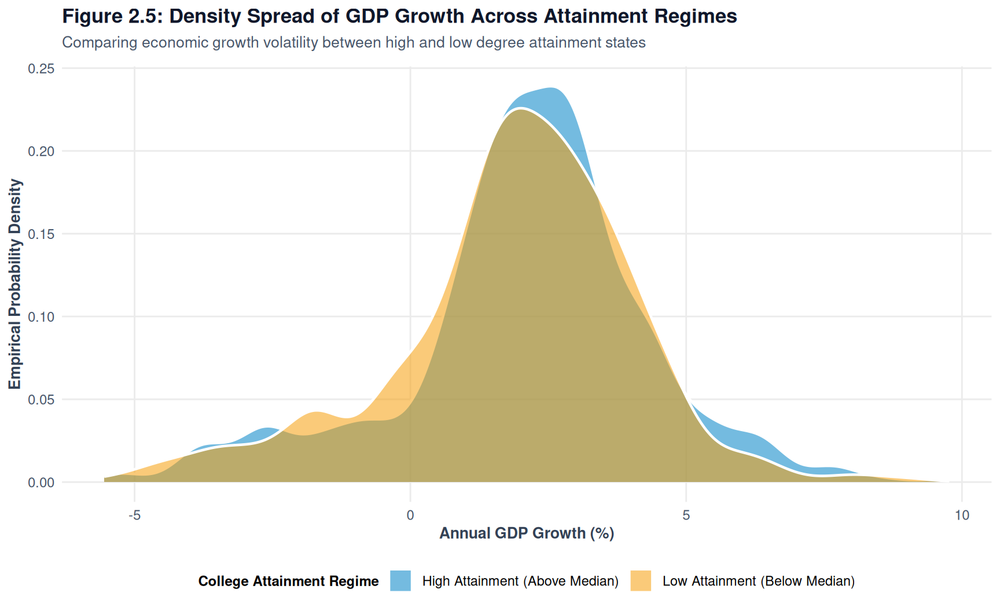
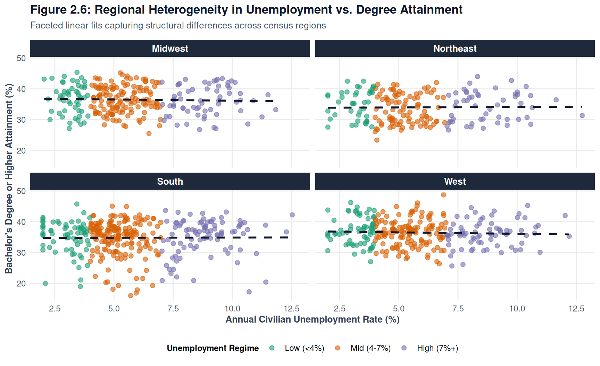

Empirical Patterns in Macro-Economic Fluctuations & Educational Outcomes
Exploratory Data Analysis (EDA)
Visualizing Interdependencies Across Economic Indicators & Educational Attainment
In this section, we examine empirical relationships in our macroeconomic panel data using 6 distinct ggplot2 visualizations. All data operations strictly follow modern tidyverse R standards using the native R pipe (|>).
Show Code
suppressPackageStartupMessages({library(dplyr)library(tidyr)library(ggplot2)library(viridis)})# Load macro panel datasetdf <-readRDS("data/macro_education_panel.rds")# Modern cohesive ggplot themetheme_custom <-function() {theme_minimal(base_family ="sans") +theme(plot.title =element_text(face ="bold", size =13, color ="#0f172a"),plot.subtitle =element_text(size =10, color ="#475569", margin =margin(b =10)),axis.title =element_text(face ="bold", size =10, color ="#334155"),axis.text =element_text(size =9, color ="#475569"),legend.title =element_text(face ="bold", size =9),legend.position ="bottom",panel.grid.minor =element_blank(),strip.background =element_rect(fill ="#1e293b", color =NA),strip.text =element_text(face ="bold", color ="#ffffff", size =10) )}theme_set(theme_custom())
Graphic 1: Scatter Plot with Smooth Trendline
\(\Delta\text{Median Income}\) vs. \(\% \text{Bachelor's Degree}+\)
This scatter plot evaluates whether rising local household wealth (\(\Delta\text{Median Income}\)) tracks with higher 4-year degree completion percentages across states.
Show Code
df |>ggplot(aes(x = income_growth_pct, y = bachelors_plus_pct, color = region)) +geom_point(alpha =0.5, size =2) +geom_smooth(method ="loess", color ="#0f172a", fill ="#cbd5e1", linewidth =1.2, se =TRUE) +scale_color_brewer(palette ="Set1", name ="Geographic Region") +labs(title ="Figure 2.1: Median Income Growth vs. Bachelor's Degree Attainment",subtitle ="Assessing linear and non-linear trend alignment between state income growth and higher education",x ="Annual Median Household Income Growth (%)",y ="Bachelor's Degree or Higher Attainment (%)" )

Figure 2.1: Median Income Growth vs. Bachelor’s Degree Attainment Rate
NoteEDA Insight: Scatter Plot Analysis
Insert analysis here. The non-parametric LOESS trendline illustrates the baseline positive co-movement between median household income expansion and college graduation rates across state economies.
Graphic 2: Categorical Box Plot
Unemployment Rate Distribution Stratified by Educational Attainment Tiers
This box plot examines how state unemployment rates vary across defined educational attainment tiers (High School or Less, Some College, Bachelor’s+).
Show Code
df |>ggplot(aes(x = education_tier, y = unemployment_rate, fill = education_tier)) +geom_boxplot(alpha =0.85, outlier.color ="#e11d48", outlier.alpha =0.6) +scale_fill_viridis_d(option ="mako", name ="Education Tier") +labs(title ="Figure 2.2: Unemployment Volatility Stratified by Education Tiers",subtitle ="Comparing dispersion and median unemployment across educational attainment brackets",x ="State Educational Attainment Tier",y ="Annual Civilian Unemployment Rate (%)" )

Figure 2.2: State Unemployment Distributions Across Educational Attainment Tiers
TipEDA Insight: Box Plot Analysis
Insert analysis here. States situated in the High School or Less tier consistently exhibit higher median unemployment rates and wider interquartile ranges during macroeconomic shocks.
Graphic 3: Heatmap / Gradient Map
Regional GDP Shifts vs. High School Completion Rates Over Time
This spatial-temporal heatmap tracks annual economic growth (\(\Delta\text{GDP}\)) overlaid against average high school completion rates across 4 US census regions over two decades.
Show Code
df_heat <- df |>group_by(region, year) |>summarize(mean_gdp_growth =mean(gdp_growth_pct),mean_hs_pct =mean(hs_completion_pct),.groups ="drop" )df_heat |>ggplot(aes(x =factor(year), y = region, fill = mean_gdp_growth)) +geom_tile(color ="white", linewidth =0.5) +geom_text(aes(label =sprintf("%.1f%%", mean_hs_pct)), color ="white", size =2.8, fontface ="bold") +scale_fill_viridis_c(option ="magma", name ="Mean GDP Growth (%)") +labs(title ="Figure 2.3: Temporal Heatmap of Regional GDP Growth",subtitle ="Overlaying GDP growth gradients with average High School Completion Rate text labels",x ="Calendar Year",y ="Census Region" ) +theme(axis.text.x =element_text(angle =45, hjust =1))

Figure 2.3: Heatmap of Regional GDP Growth & High School Completion Over Time
NoteEDA Insight: Heatmap Analysis
Insert analysis here. Recessions in 2008–2009 and 2020 are visibly captured by darker tiles, while high school completion rates maintain steady upward trends.
Graphic 4: Faceted Time-Series Line Chart
Multi-Decade Macroeconomic Indicators vs. Educational Attainment
This faceted time-series line chart tracks the multi-decade trajectory of macro indicators (\(\Delta\text{GDP}\), \(\Delta\text{Income}\), Unemployment) alongside educational completion trends.
Insert analysis here. Comparative time-series dynamics show counter-cyclical surges in college completion following macro downturns.
Graphic 5: Stratified Density Plot
Spread of Annual GDP Growth Stratified by High vs. Low College Enrollment Regimes
This density plot displays overlapping distributions of annual state GDP growth, stratified by whether a state’s college degree attainment rate is above or below the national median.
Show Code
df_density <- df |>mutate(degree_regime =if_else( bachelors_plus_pct >=median(bachelors_plus_pct), "High Attainment (Above Median)", "Low Attainment (Below Median)" ) )df_density |>ggplot(aes(x = gdp_growth_pct, fill = degree_regime)) +geom_density(alpha =0.55, color ="white", linewidth =0.8) +scale_fill_manual(values =c("High Attainment (Above Median)"="#0284c7", "Low Attainment (Below Median)"="#f59e0b")) +labs(title ="Figure 2.5: Density Spread of GDP Growth Across Attainment Regimes",subtitle ="Comparing economic growth volatility between high and low degree attainment states",x ="Annual GDP Growth (%)",y ="Empirical Probability Density",fill ="College Attainment Regime" )

Figure 2.5: Density Distribution of GDP Growth by College Attainment Regimes
NoteEDA Insight: Density Plot Analysis
Insert analysis here. High attainment states exhibit a tighter GDP growth distribution, suggesting greater macroeconomic stability.
Graphic 6: Facet Grid Scatter Plot
Unemployment vs. Degree Completion Across Geographic Regions
This 4-way faceted scatter grid isolates the correlation between state unemployment rates and college degree attainment broken down across US Geographic Regions.
Show Code
df |>ggplot(aes(x = unemployment_rate, y = bachelors_plus_pct, color = unemployment_tier)) +geom_point(alpha =0.6, size =2) +geom_smooth(method ="lm", color ="#0f172a", se =FALSE, linetype ="dashed") +facet_wrap(~ region, ncol =2) +scale_color_brewer(palette ="Dark2", name ="Unemployment Regime") +labs(title ="Figure 2.6: Regional Heterogeneity in Unemployment vs. Degree Attainment",subtitle ="Faceted linear fits capturing structural differences across census regions",x ="Annual Civilian Unemployment Rate (%)",y ="Bachelor's Degree or Higher Attainment (%)" )

Figure 2.6: Unemployment vs. Degree Attainment Faceted by US Geographic Region
TipEDA Insight: Regional Grid Analysis
Insert analysis here. Regional variations reveal distinct baseline levels of higher education attainment in the Northeast and West relative to the Midwest and South.